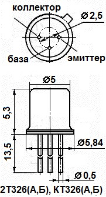
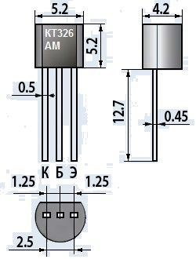

Транзисторы КТ326
Транзистор КТ326 - усилительный, эпитаксиально-планарный, кремниевый, структуры p-n-p. Основное применение - переключающие устройства и усилители высокой и сверхвысокой частоты.
КТ326А, КТ326Б, 2Т326А, 2Т326Б имеют металлостеклянный корпус и гибкие выводы. Масса не более 0,5 г. Маркировка типа нанесена на корпусе.
КТ326АМ, КТ326БМ имеют пластмассовый корпус и гибкие выводы. Масса не более 0,3 г. Маркируются цветной точкой на корпусе со стороны коллектора: КТ326АМ - розовая, КТ326БМ - жёлтая.


Рис. 1 - Габаритные размеры и цоколевка транзистора КТ326
Таблица 1
| Коэффициент передачи тока (статический). Схема с общим эмиттером при Uкб=2 В, Iэ=10 мА: |
|
| Т = +25°C: | |
| КТ326А, 2Т326А, КТ326АМ | 20 ... 70 |
| КТ326Б, 2Т326Б, КТ326БМ | 45 ... 160 |
| Т = -60°C: | |
| КТ326А, КТ326АМ | 6 ... 70 |
| КТ326Б, КТ326БМ | 15 ... 160 |
| 2Т326А, не менее | 6 |
| 2Т326Б, не менее | 15 |
| Граничная частота коэффициента передачи тока при Uкб = 5 В, Iэ = 10 мА, не менее: |
|
| КТ326А, 2Т326А, КТ326АМ | 250 МГц |
| КТ326Б, 2Т326Б, КТ326БМ | 400 МГц |
| Постоянная времени цепи обратной связи при Uкб = 5 В, Iэ = 10 мА, f = 5 МГц |
450 пс |
| Напряжение насыщения КЭ при Iк = 10 мА, Iб = 1 мА, не более |
0,3 В |
| Напряжение насыщения БЭ при Iк = 10 мА, Iб = 1 мА, не более | 1,2 В |
| Ток коллектора (обратный) при Uкб = 10 В, не более: | |
| Т = +25°C | 0,5 мкА |
| Т = +125°C | 10 мкА |
| Ток эмиттера (обратный) при Uэб = 4 В, не более: | |
| Т = +25°C | 0,1 мкА |
| Т = +125°C 2Т326А, 2Т326Б | 10 мкА |
| Ёмкость коллекторного перехода при Uкб = 5 В, не более | 5 пФ |
| Ёмкость эмиттерного перехода при Uэб = 0, не более | 4 пФ |
Таблица 2
| Напряжение К-Б (постоянное) | 20 В |
| Напряжение К-Э (постоянное) при Rбэ ≤ 100 кОм | 15 В |
| Напряжение Э-Б (постоянное) | 4 В |
| Суммарное напряжение К-Э (постоянное и переменное) в режиме усиления при Rбэ≤100 кОм | 20 В |
| Ток коллектора (постоянный) | 50 мА |
| Рассеиваемая мощность коллектора (постоянная): | |
| при Т ≤ +25°C для 2Т326А, 2Т326Б | 250 мВт |
| при Т = +125°C для 2Т326А, 2Т326Б | 83 мВт |
| при Т ≤ +30°C для КТ326А, КТ326Б, КТ326АМ, КТ326БМ | 42 мВт |
| Температура сопротивления "переход - среда" | 0,6°C/мВт |
| Температура перехода (p-n): | |
| КТ326А, КТ326Б, КТ326АМ, КТ326БМ | +150°C |
| 2Т326А, 2Т326Б | +175°C |
| Рабочая температура (окружающей среды) | -60 ... +125°C |